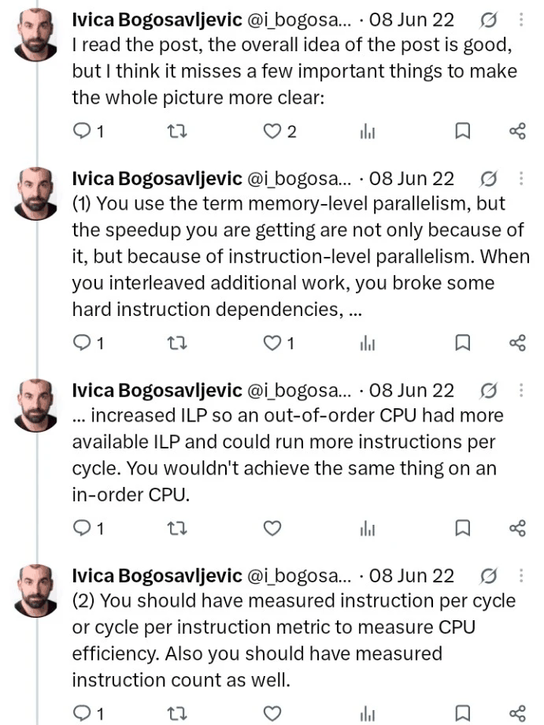

Memory-level parallelism in mibz2: instructions, overlap and evidence¶
Interleaving pointer chases lets memory waits overlap. The speedup shows that this pays, but not what limits it: a 2022 exchange about Daniel Lemire's benchmark, read against mibz2's inverse-BWT walk.

To decode a bzip2 block, mibz2 eventually performs an odd kind of memory access. It reads an entry from a table, and the value it gets back says which entry to read next. Each 4-byte entry packs two things: its low 8 bits are one decoded byte, and the bits above them are the number of the next row to read.
let q = t[row]; // read this row's entry
row = q >> 8; // the upper bits: the next row to read
out.push(q as u8); // the low 8 bits: one decoded byte
Suppose the walk is at row 7, and row 7's entry says that row 12 comes next. Only once that entry has arrived does the CPU know to read row 12, whose entry might point to row 4, and so on. The CPU isn't short of instructions it could run. It's short of an address. And when the entry isn't in a nearby cache, every step waits for memory.
So mibz2 doesn't walk one chain at a time. It picks about 500 starting rows spread across the table, which cuts the traversal into segments, and advances 32 of those segments in turn, so that while one lane waits for its load the others can issue theirs. In 32 lanes, 8.6 chains we measured what that buys: the 32-lane walk runs about 8.6 times as fast as a single chain.
What made it faster? It's tempting to say we'd found how many memory requests the CPU can keep in flight at once, its memory-level parallelism (MLP). But the same change also handed the CPU's scheduler far more independent instructions, which is instruction-level parallelism (ILP). Which of the two explains the speedup, and does the answer change what we should try to make faster?
The same question came up in 2022, in replies to Daniel Lemire's post Memory-level parallelism: Intel Ice Lake versus Amazon Graviton 3. Lemire measures MLP with a benchmark much like our walk: a long pointer chase through a large array, then the same accesses shared among more and more independent chains. Ivica Bogosavljevic replied that the speedup comes from ILP as well; Lemire, that the waits are memory loads, not instructions.
They were both right, because ILP and MLP aren't rival explanations here: the independent instructions are what let the memory requests overlap, so the two names describe one mechanism from its two ends. The more useful question is what a speedup like our 8.6 can tell you about the part of the machine that limits it. It shows that overlapping the chains pays, but not what stops the gain from growing, and so not what to make faster next. We found that out on our own walk: removing a third of its instructions made it about 12% faster on its own, and left the decoder no faster with four workers.
The sections below take that argument in order: why one chain stalls; how ILP and MLP fit together; what Lemire's curve can and can't measure; what happened when we cut the walk's instructions; and where the four-worker decoder's extra time goes instead.
1. Why a pointer chase stalls¶
Stripped of the decoding, the walk is the classic pointer chase. Written in C, with next
standing for the table, each step is
p = next[p];
and the value each load returns is the address of the next. An out-of-order CPU looks far ahead in the instruction stream for work it can start early, but it can't issue a load whose address it doesn't know yet, and no amount of lookahead can supply a value that hasn't arrived.
Unrolling the loop, writing the step out four times, doesn't change that:
p = next[p];
p = next[p];
p = next[p];
p = next[p];
That saves a little loop bookkeeping, but the four loads are still one chain, each waiting for the last. What does help is giving the loop four independent chains:
p0 = next[p0];
p1 = next[p1];
p2 = next[p2];
p3 = next[p3];
Each lane still waits on itself from one round to the next. Within a round, though, all four addresses are known, so all four loads can be issued without waiting for one another.
Unrolling one chain, and interleaving four
Nothing here needs real pointers. A chain of integer indices behaves the same way, and the lanes can share one array. mibz2's table of row numbers is exactly this kind of chain.
Faster, without any load getting quicker¶
Suppose, with made-up round numbers, that each dependent load takes 80 ns to come back from memory. One chain then completes 12.5 million steps a second. If eight chains overlap perfectly, eight loads are in flight at once and the walk completes 100 million steps a second: one every 10 ns on average, even though each load still takes 80 ns.
That changes how busy the CPU looks. A common measure of busyness is instructions per cycle (IPC): how many instructions the processor completes, on average, in one tick of its clock. A modern core can complete several per cycle when it has independent work and its data close at hand. An IPC of 1 means one instruction per cycle; an IPC of 0.1 means one every ten cycles. A core that spends most of its time waiting for memory has a low IPC, even when it's doing exactly what we want.
In the example, at 3 GHz an 80 ns wait is 240 cycles. If each step runs three instructions, one chain completes three instructions every 240 cycles:
With eight chains overlapping, eight steps' worth complete in the same 240 cycles, an IPC of about 0.1. The walk is eight times faster, and the CPU still completes only one instruction every ten cycles.
That's the situation Lemire described when he replied that IPC in his benchmark is "small (much less than one)". A low IPC fits a loop that mostly waits for memory, and it shows that a large speedup doesn't need the core to look any busier. It doesn't say which part of the machine the loop is waiting on, and it doesn't show that the extra independent instructions played no part. That's the other half of the argument.
2. ILP exposes the work; MLP lets it overlap¶
Ivica's objection was that the interleaved loop isn't only demonstrating memory-level parallelism:

Read the whole exchange


Ivica Bogosavljevic, 8 June 2022: I read the post, the overall idea of the post is good, but I think it misses a few important things to make the whole picture more clear:
Ivica Bogosavljevic, 8 June 2022: (1) You use the term memory-level parallelism, but the speedup you are getting are not only because of it, but because of instruction-level parallelism. When you interleaved additional work, you broke some hard instruction dependencies, …
Ivica Bogosavljevic, 8 June 2022: … increased ILP so an out-of-order CPU had more available ILP and could run more instructions per cycle. You wouldn't achieve the same thing on an in-order CPU.
Ivica Bogosavljevic, 8 June 2022: (2) You should have measured instruction per cycle or cycle per instruction metric to measure CPU efficiency. Also you should have measured instruction count as well.
Ivica Bogosavljevic, 8 June 2022: (3) The data structure is a linked list, but it is not clear how it was allocated. Are loads mostly hitting L1, L2 or LL cache?
Denis Yaroshevskiy, 9 June 2022: Following of this - how big is the read and does it matter how big is the read.
Daniel Lemire, 9 June 2022, 1:58: This is out of cache and the instructions per cycle is small (much less than one). Obviously it assumes a superscalar processor but that's a prerequisite for a core to have multiple loads in flight. The source code is fully available. 1/2
Daniel Lemire, 9 June 2022: The approach is now pretty much standard and is used by many people. I am certainly happy to receive criticism. If you have a reasonable alternative measure of a core's memory-level parallelism, please share. 2/2
Daniel Lemire, 9 June 2022: Note that the hard dependencies are memory loads… not instructions… the instructions are mostly just out-of-cache memory loads. Please refer to the post for link to source code.
Both of them are describing the same event from different ends. In the interleaved loop:
- the program exposes independent load instructions;
- the processor issues them before the earlier ones finish;
- their memory requests overlap;
- more steps complete per second.
The first two steps are ILP and the last two are MLP: the opportunity, and what the memory system makes of it. They aren't two separate speedups to be added up. The independence of the instructions is what lets the memory requests overlap. Work on MLP treats them together for that reason: how far ahead the instruction window reaches, and how scheduling and branches behave, decide how much memory concurrency a core can actually achieve (Chou, Fahs and Abraham, ISCA 2004).
Each side's wording is a little loose. Interleaving doesn't "break" any dependency, as Ivica put it: each chain keeps all of its own, and independent chains are added alongside. And loads are instructions, so "memory loads, not instructions" really means that the delay on the critical path is the memory system's, not arithmetic's. Neither claim about processors is universal either. A core doesn't have to be superscalar or out of order to keep several misses in flight: Berkeley's single-issue, in-order Rocket core has a nonblocking data cache, and Arm documents three outstanding misses, under some conditions, on the in-order Cortex-A55 (the appendix has the sources). An in-order core is simply much more sensitive to the order in which the loads appear.
Ivica's request for instruction counts and IPC is still a good one, and he has since shown interleaved code that executes more instructions and runs faster (Johnny's Software Lab). His point isn't that instructions must be minimised. It's that once the loads are exposed, something decides how fast they complete, and the speedup curve alone doesn't say what.
3. What Lemire's speedup really measures¶
Lemire's benchmark is a careful version of the loop above (source, as published before the 2022 post). It fills a 256 MiB array of 64-bit indices with a random permutation that forms one long cycle, starts each lane at a different point on the cycle, and keeps the total number of accesses fixed as lanes are added, so more lanes reschedule the same work rather than doing more of it. The 2022 post reports about 90 ns for a single lane on the Ice Lake machine and 120 ns on Graviton 3, and describes the two as sustaining about 25 and 19 loads at once.
Figures like those come from where the curve stops rising; the benchmark's code, for instance, reports the lane count at which one more lane improves the time by less than 1%. A plateau like that can have many causes:
- the core runs out of slots for outstanding misses;
- the instruction window fills before it reaches more loads;
- address generation or load throughput saturates;
- the TLB and page walker can't keep up;
- registers spill as lanes are added;
- requests take longer once many are queued;
- bandwidth runs out;
- or noise lands near the 1% threshold.
The curve alone can't tell these apart. So "about 25 loads at once" is safest read as a statement about the whole machine running this workload: around the 25th lane, another chain stopped buying more overlap. It needn't be the size of any one queue. As Travis Downs pointed out in an earlier discussion of the same benchmark, every queue between the core and DRAM affects the plateau, and what matters is not only how many entries a queue has but how long each request holds one. Changing the page size moved the plateau too. A 256 MiB array spans 65,536 pages of 4 KiB, so translation is part of what the benchmark measures.
How big is the read?¶
Denis Yaroshevskiy's question, how big each read is and whether it matters, turns out to go to the heart of the bandwidth figures. Each load reads 8 bytes, but the program reports bandwidth by counting 64 bytes per access, one cache line. That's a model of the traffic, not a measurement of it: a line may already be cached, two accesses may share a line, prefetches add traffic of their own, and page walks add more. The size of an instruction's operand, the line it pulls in, the useful bytes it delivers and the page it translates through are four different things. That distinction matters for mibz2, whose table entries are 4 bytes.
Four things called MLP¶
By this point "memory-level parallelism" has been used for at least four different quantities:
| Quantity | The question it answers |
|---|---|
| Independence in the software | How many chains can advance at once? |
| Capacity in the hardware | How many entries does a particular queue have? |
| Achieved occupancy | How many requests are outstanding, on average? |
| Speedup, or the knee of the curve | How much faster is it, and when does another lane stop helping? |
They needn't agree. A program can run 32 lanes and keep eight requests outstanding. An eightfold speedup doesn't prove that eight DRAM requests were in flight on average. And occupancy can rise for a bad reason as well as a good one: if each request takes longer to complete, more of them are outstanding at any moment even though no more work gets done.
None of this makes the benchmark wrong. It's a sound, open way to show that overlapping dependent chains pays, which is what Lemire defended. What its curve can't do is name the resource that stops it rising. That gap matters as soon as you try to make such a loop faster by changing its instructions, which is what we did next.
4. Cutting instructions helped the walk, but not four-worker throughput¶
In the version of mibz2 examined here, the inverse-BWT walk runs 32 lanes over up to 512 segments. Each ordinary step is close to the loop we started with, plus a prefetch:
let q = t[lane.row];
lane.row = q >> 8;
prefetch(t, lane.row);
output_for_lane[offset] = q as u8;
As soon as a lane's entry arrives, its next row is known, and the walk asks for it straight away. It then serves the other lanes before coming back.
The prefetch's lead time in the 32-lane walk
Our table is also much smaller than Lemire's array. A full block of 900,000 rows of 4-byte entries is 3.6 MB, against his 256 MiB. That's far bigger than a core's private L2 but small enough to fit, on its own, in the 20 MiB shared L3 of the workstation we test on. Fitting isn't the same as hitting: capacity alone doesn't tell us how often its accesses are served from L3 while four workers decode at once.
The 8.6 from the introduction is the ratio of two measured costs, 38.55 cycles per byte for one chain and 4.49 for the 32-lane walk. It's a throughput factor, not a count of requests in flight. All 32 lanes can do useful work even if only some have a request outstanding at any instant.
When instructions become the limit¶
A rough model shows why instructions might matter once the lanes are there. The time per step can't be shorter than the slowest of three limits:
Here \(L/K\) is the memory latency shared among \(K\) independent chains, \(u/P\) the instruction work per step over the rate the core can execute it, and \(b/B\) the bytes per step over the available bandwidth. It's optimistic and leaves a great deal out, but it captures the turn in the story, because shrinking one term helps only while that term is the largest. With one chain, \(L/K\) dominates and trimming instructions barely helps. Add enough chains and \(L/K\) falls until the instruction work, or the traffic, takes over. At that point fewer instructions should mean a faster walk: they shorten the work per step, they free load and address-generation slots, and they let the instruction window reach more loads.
So we tried it. An experiment unrolled all 32 lane steps so that each used fixed offsets, removing most of the walk's bookkeeping (assembly comparison):
| Per ordinary lane step, hot loop | Original | Unrolled |
|---|---|---|
| Instructions | 16.4 | 10.44 |
| Loads | 3.0 | 3.06 |
| Stores | 2.03 | 2.16 |
| Prefetches | 1 | 1 |
About 36% of the instructions went, while the memory operations stayed. On its own, on an EPYC 7763, the unrolled walk took 0.877 of the original's time (95% interval 0.863 to 0.891): about 12% less.
Then it went into the whole decoder, in a registered trial on our test workstation (results):
| Decoder throughput, unrolled ÷ original | Point | 95% interval |
|---|---|---|
| One worker | 1.017 | 1.006–1.028 |
| Four workers | 1.000 | 0.987–1.012 |
With four workers, the configuration that matters, the gain was nothing. A control workload's CPU cost got worse, and the trial's verdict was negative.
The two results come from different processors, so together they don't isolate one cause. A plausible reading is that the removed instructions weren't using the resource that limits the four-worker decoder: the archive's own explanation, pressure on the workstation's load and address ports, comes from a static model, not a measurement. What the pair does establish is the point of Ivica's objection. Cutting instructions can make a loop faster in isolation and make no difference to the program it lives in.
For optimisation, a bottleneck is the resource whose relief improves the figure you care about. The walk's extra instructions were real work, but removing them didn't improve four-worker throughput, so for that figure they weren't the bottleneck. In the model's terms, the instruction term \(u/P\) wasn't the largest one when four workers shared the machine, and shrinking a term that isn't the largest changes nothing.
5. The bottleneck isn't an instruction count¶
If not instructions, then what? Our earlier attribution of the whole decoder (analysis) compared one worker with four:
| Per decoded byte | One worker | Four workers |
|---|---|---|
| Instructions retired | 32.63 | 33.06 |
| CPU cycles | 13.46 | 17.51 |
| IPC | 2.42 | 1.89 |
With four workers the decoder retires almost exactly the same instructions per byte (1.3% more) but needs 30% more cycles to complete them. Note too that IPC is above one in both columns, so "IPC below one means memory-bound" wouldn't have classified this workload either way. IPC is a ratio of two things that can each change, and a change that cuts instructions can lower IPC and still save cycles.
Much of that extra time is in the inverse-BWT step. On 197 matched full-sized blocks, traversal plus assembly rises from 1.234 to 1.806 CPU ns per row with four workers (corrected proposal). Four full tables take 14.4 MB of the workstation's 20 MiB L3 before any other buffer, so the workers are plausibly competing for cache and for the path to memory, but the arithmetic alone doesn't prove it. The previous post describes the experiments designed to test it.
Counters can mislead in the same way¶
Hardware counters are the obvious way to find out, but they need the same care as Lemire's curve. Intel defines an "MLP" metric as the number of pending L1 demand misses summed over cycles, divided by the number of cycles in which any such miss was pending. Between one worker and four, that figure hardly changed, staying near 2.18. That sounds like nothing changed. But the share of cycles with a miss pending rose from about 12% to about 30%, so averaged over all cycles the occupancy rose from roughly \(2.18 \times 0.12 \approx 0.26\) to \(2.18 \times 0.30 \approx 0.65\). The metric was answering a narrower question than its name suggests.
One occupancy trace, three ratios
The same caution applies to every counter we read: what it counts, over which cycles, for which requests. The technical appendix goes through the counters behind these figures, two earlier readings of them that we've withdrawn, and the measurements that would separate the remaining explanations.
Exposing work isn't the same as completing it¶
Put together, the argument runs:
- A dependent pointer chase waits on memory at every step, because each load's address is the value the previous load returned.
- Independent chains give the processor loads it can issue together (ILP), and their requests overlap in the memory system (MLP). Throughput rises though no load gets faster.
- The speedup, and the lane count where it levels off, show that the overlap pays. They don't show which resource stops it, because many different limits produce the same curve.
- So a cost that looks large isn't necessarily the one to cut. Removing a third of mibz2's walk instructions made the walk faster on its own and left the four-worker decoder where it was. Four workers retire the same instructions per byte as one, and take longer to complete them.
So the next gain won't come from counting instructions, or from counting requests in flight. It will come from finding which resource the traversal is actually waiting on when four workers share the machine, and changing whatever consumes it.
Research records: Technical appendix, reading list and source register · Unrolled walk: assembly comparison · Unrolled walk: four-worker decoder results · Decoder attribution, one worker against four · Inverse-BWT memory proposal, with corrections.